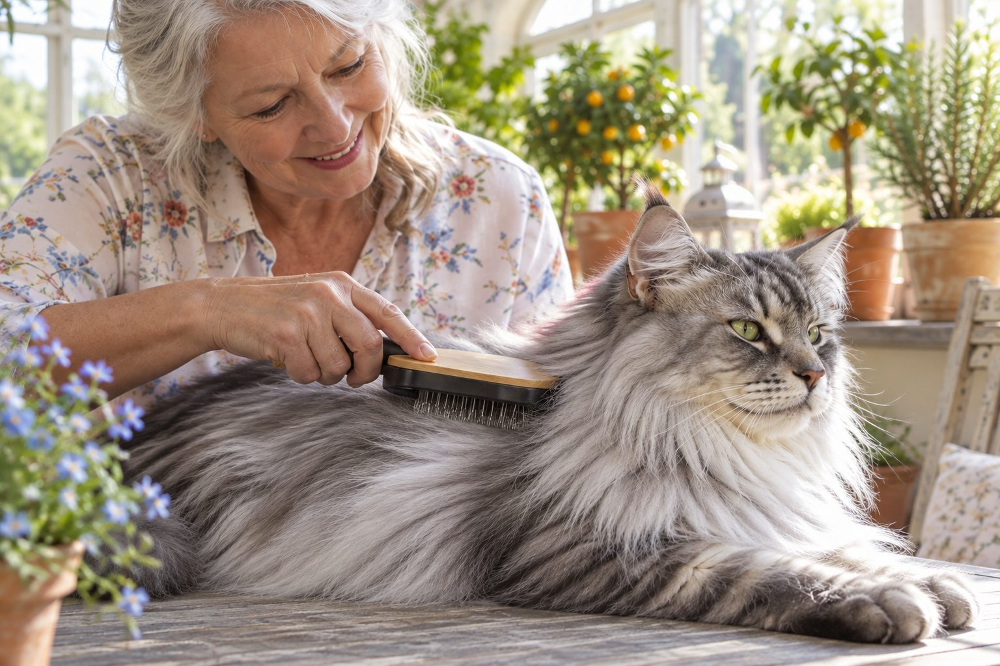

Short-haired cats often benefit from weekly brushing; long-haired cats may need brushing several times a week or daily.
Cats groom themselves, but a brush can remove loose hair, reduce tangles, and give you a chance to notice skin changes. The right schedule is the one that keeps the coat comfortable without making your cat dread the brush.
Match the brush to the coat
A soft brush or rubber grooming tool may suit a short coat. A long coat may need a comb that reaches through the hair without scraping the skin. Ask a groomer for help choosing a tool if the coat mats easily.
Start with a brief session along the back or shoulders, where many cats enjoy being touched. Stop before your cat becomes irritated. Several calm minutes are more useful than a long struggle.
Coat type changes the amount of help a cat may need, but the individual animal matters more than a label. A short-coated cat that grooms easily may need brief checks and occasional brushing, while a long or dense coat can tangle faster. Look at friction points behind the ears, under the front legs, and around the hindquarters. Those areas may mat even when the back looks smooth. Brushing frequency should be set by what you find, not by a promise that every cat of a breed needs the same calendar.
Choose a tool that reaches loose hair without scraping skin. Ask a groomer to demonstrate on your own cat if you are unsure. A gentle comb can reveal tangles close to the skin that a surface brush misses. Start with a few strokes and a reward, then stop while the cat is still comfortable. Short sessions repeated regularly are often more effective than a long session that teaches avoidance.
Watch for tangles and skin changes
Pay special attention behind the ears, under the front legs, and around the belly, where knots can form. Never cut close to the skin with scissors; cat skin is delicate and can be caught in a mat. A professional can remove tight mats safely.
As you brush, look for flakes, bald spots, sores, or fleas. These findings deserve veterinary advice, particularly if your cat is scratching or grooming excessively.
A tangle is not just a cosmetic problem. Tight mats can pull when the cat walks or lies down, and they can hide irritated skin. Do not tug at a mat or cut it with scissors close to the body; cat skin is thin and can be injured easily. If a comb does not pass through gently, consult a groomer or veterinarian. The right intervention depends on the mat's position, size, and the cat's tolerance. Trying to fix it at home by force can make later grooming harder.
While grooming, look for flakes, bald patches, scabs, fleas or flea dirt, and any spot that makes the cat flinch. Report persistent changes to your veterinarian rather than assuming they are a seasonal shed. If a previously tidy cat suddenly has a greasy or tangled coat, consider pain, illness, or reduced mobility. The coat can be an early clue that self-grooming has become difficult.

Adjust with age and season
Shedding may increase at certain times of year. Older or heavier cats may have trouble reaching parts of their coat and need more help. A sudden decline in self-grooming can signal discomfort or illness, so avoid assuming it is only age.
Offer a treat after brushing and store the tool nearby for short, easy sessions. If your cat resists, build comfort by first letting it sniff the brush and rewarding a single stroke.
Age can change the routine. A kitten benefits from very short positive introductions to touch and a brush. An older cat may have arthritis or another reason it cannot reach the lower back, so help may be needed even if the coat is short. Support the cat's body and avoid twisting painful joints. If the cat resists a position it once accepted, pause and ask a veterinarian whether discomfort could be involved. Seasonal shedding can increase loose hair, but it should not be the only reason to inspect the skin.
For a cat that dislikes brushing, practice with the brush nearby before it touches the coat. Pair one gentle stroke with a valued reward, then end. Build up slowly over days. Avoid restraining a struggling cat for a full session. A grooming plan that preserves trust is more likely to be maintained for months and years.
Keep grooming gentle
Brush in the direction the coat lies and support your cat on a stable surface. Do not pull at knots. If grooming seems painful, stop and seek professional help. Routine care should leave the cat relaxed, not frightened.
Keep the tool clean and inspect it for bent or sharp parts. Remove collected hair between sessions, and wash the tool according to its instructions. Brush in the direction the coat lies unless a professional has shown you another technique for that coat. Work from easy areas toward sensitive ones. Stop if the cat's tail flicks sharply, ears flatten, skin twitches repeatedly, or the cat tries to leave. These are signals to shorten the session, not to hold more firmly.
Some cats tolerate grooming best on a stable table; others prefer the floor or a familiar perch. Use a nonslip surface and make sure the cat can leave safely. In a multicat home, groom one cat at a time so no one is crowded. Record where mats recur. Changing the tool or asking for professional help may be more useful than simply increasing brushing force.
Practical details
Choose a tool the coat actually needs
A rubber brush can collect loose hair from a short coat without scraping. A comb that reaches through longer hair can reveal hidden tangles near the skin. A tool that only smooths the top layer may make a long coat look tidy while mats grow underneath. Ask a groomer to show you a suitable comb and how much pressure to use if you are unsure.
Hold the cat on a stable surface and brush in the direction of hair growth. Start with a few strokes along the back, not a full-body session. Watch for a relaxed posture, soft eyes, and willingness to stay. Tail swishing, skin twitching, or repeated attempts to leave mean it is time to stop.
A starting point by coat and comfort
| Situation | Practical response |
|---|---|
| Short, smooth coat | Try a brief weekly session, then adjust for shedding and the cat's preference. |
| Long or dense coat | Check for tangles frequently; many cats need several sessions a week or daily care. |
| Older or less mobile cat | Watch areas the cat can no longer reach and ask a professional about safe help. |
| Mats or sore skin | Do not pull or cut close to the skin; arrange grooming or veterinary advice. |
The places that need a closer look
Behind the ears, under the front legs, around the collar area, and near the hindquarters are common tangle sites. Gently separate loose knots with fingers before using a comb, but stop if the hair pulls on skin. Cat skin can tear easily under a tight mat. Scissors are risky, especially when you cannot see where skin begins; a professional can remove severe mats safely.
Brushing is also an observation session. Look for bald patches, flea dirt, flakes, sores, or a cat that suddenly stops grooming itself. A change in grooming can accompany pain or illness, so discuss it with a veterinarian rather than simply brushing harder or more often.
Hairballs and shedding are often part of why owners start brushing, but do not assume every vomited clump is harmless. Repeated vomiting, reduced appetite, constipation, or lethargy warrants veterinary advice. Brushing can reduce loose hair swallowed during self-grooming, yet it cannot diagnose a digestive problem. Keep the grooming routine as one part of overall care and note any change in frequency of vomiting rather than trying multiple unproven products at once.
If the cat wears a collar or harness, inspect the fur beneath it for friction or tangles. Also check after a period of illness or boarding, when normal grooming may have been interrupted. A quick hand-over-coat check during petting can catch trouble before a full brush session is needed. Do not let the pursuit of a perfectly sleek coat override the cat's comfort.
Make the habit pleasant
Pick a quiet time when your cat is already relaxed. Reward one or two strokes, then put the brush away. Over several days, build a little longer if the cat stays comfortable. Some cats prefer being brushed while standing, others on a lap. The schedule should support a healthy coat and a trusting relationship, not turn grooming into a contest.
During heavy shedding, short extra sessions may remove loose hair before it is swallowed during self-grooming. Brushing may help reduce hair ingestion, but frequent vomiting or difficulty passing stool is a medical concern. A veterinarian can advise whether a different plan is needed.
Consider two cats in one home. The short-coated cat grooms well and enjoys a brief weekly brush; the long-coated cat forms small tangles behind its ears after only a few days. Matching care to each cat is more practical than applying one schedule to both. Keep a simple note of when the comb passes easily and when a mat appears. That record helps you set an interval without guessing.
If a mat has already formed, get appropriate help before it becomes painful. After removal, ask where it started and whether a different tool or shorter, more frequent sessions could prevent it. Grooming should let you notice changes in skin and mobility as well as loose hair. The best routine is one the cat can tolerate and that you can repeat before the coat becomes uncomfortable.
The cat's response should shape the session length. A cat that leans into a few strokes may accept another minute; a cat with flattened ears, twitching skin, or a whipping tail needs a break. End before the interaction becomes a fight. Keep the comb near a favored resting area so short sessions can happen naturally, but put sharp tools away between uses. If the cat accepts petting but not a brush, begin by briefly touching the tool to the shoulder and rewarding, without trying to remove hair immediately.
Look beneath the surface coat as you work. A smooth top layer can hide a tight knot close to the skin, particularly at friction points. If you find a mat that will not separate with gentle combing, arrange professional help. Avoid scissors against the skin. For a cat that has recently stopped grooming, report changes in jumping, appetite, or energy along with the coat problem. Brushing can help comfort, but it should not conceal a reason the cat can no longer groom itself.
Turn brushing into a short cooperative ritual
Start with a tool that suits your cat's coat and a time when the cat already chooses to sit nearby. Offer one or two gentle strokes along an easy area such as the back, then pause. Watch for a relaxed posture and a willingness to stay. Short pleasant sessions can do more than a long session that ends with the cat hiding from the brush.
As you brush, part the coat gently to look for mats, skin irritation, or fleas. Focus on friction areas such as behind the ears and under the legs, but do not pull a tight mat away from delicate skin. Cats with long coats or reduced mobility may need more frequent help. If grooming suddenly becomes painful or your cat stops grooming itself, ask a veterinarian about possible underlying discomfort.
Keep notes about how quickly loose hair accumulates. Seasonal shedding, coat length, and the individual cat's tolerance all affect the schedule. If your cat becomes overstimulated, end while it is still comfortable and resume another day. Brushing should support coat care and trust, not become a contest.
Continue exploring
For a broader routine, read How Often Should You Change Cat Litter?, Why Is My Cat Suddenly Hiding?, and How to Trim a Cat's Nails Without a Struggle.
Frequently Asked Questions
Can I brush my cat every day?
Yes, if the brush is gentle and your cat enjoys it, especially for long coats.
Will brushing prevent hairballs?
It can remove loose hair and may help, but frequent vomiting or other symptoms deserve veterinary advice.
What if my cat hates the brush?
Use very short sessions, rewards, and a softer tool; ask a groomer for guidance if needed.
Editorial references
These resources informed the general guidance in this article. They do not replace advice tailored to your pet.
This guide offers general information. Your pet’s age, health, and history may call for a different plan. For medical concerns, ask your veterinarian.